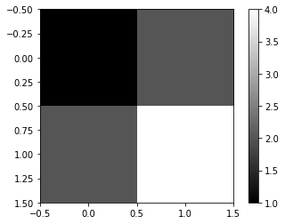
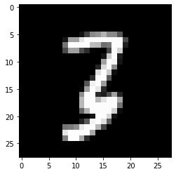
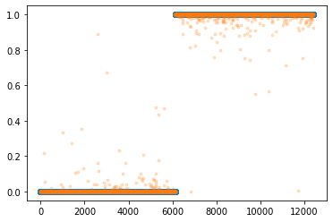

import torch
import matplotlib.pyplot as plt
from fastai.data.all import *
import torchvision06wk-1: 딥러닝의 기초 (6)
딥러닝의 기초
깊은신경망(2)– 시벤코정리, MNIST with DNN
강의영상
https://youtube.com/playlist?list=PLQqh36zP38-x9XuXWwAmKKI3JbTRoXVJA
imports
시벤코정리
지난시간 논리전개
- 아이디어: linear -> relu -> linear (-> sigmoid) 조합으로 꺽은선으로 표현되는 underlying 을 표현할 수 있었다.
- 아이디어의 실용성: 실제자료에서 꺽은선으로 표현되는 underlying은 몇개 없을 것 같음. 그건 맞는데 꺽이는 점을 많이 설정하면 얼추 비슷하게는 “근사” 시킬 수 있음.
- 아이디어의 확장성: 이러한 논리전개는 X:(n,2)인 경우도 가능했음. (이 경우 꺽인선은 꺽인평면이 된다)
- 아이디어에 해당하는 용어정리: : 이 구조가 x->y 로 바로 가는 것이 아니라 x->(u1->v1)->(u2->v2)=y 의 구조인데 이러한 네트워크를 하나의 은닉층을 포함하는 네트워크라고 표현한다.
시벤코정리
universal approximation thm: (범용근사정리,보편근사정리,시벤코정리), 1989
하나의 은닉층을 가지는 “linear -> sigmoid -> linear” 꼴의 네트워크를 이용하여 세상에 존재하는 모든 (다차원) 연속함수를 원하는 정확도로 근사시킬 수 있다. (계수를 잘 추정한다면)
- 사실 엄청 이해안되는 정리임. 왜냐햐면,
- 그렇게 잘 맞추면 1989년에 세상의 모든 문제를 다 풀어야 한거 아니야?
- 요즘은 “linear -> sigmoid -> linear” 가 아니라 “linear -> relu -> linear” 조합으로 많이 쓰던데?
- 요즘은 하나의 은닉층을 포함하는 네트워크는 잘 안쓰지 않나? 은닉층이 여러개일수록 좋다고 어디서 본 것 같은데?
- 약간의 의구심이 있지만 아무튼 universal approximation thm에 따르면 우리는 아래와 같은 무기를 가진 꼴이 된다.
- 우리의 무기: \({\bf X}: (n,p)\) 꼴의 입력에서 \({\bf y}:(n,1)\) 꼴의 출력으로 향하는 맵핑을 “linear -> relu -> linear”와 같은 네트워크를 이용해서 “근사”시킬 수 있다.
MNIST with DNN
목표
- 목표: \({\bf X}:(n,1,28,28)\) 에서 \(y:(n,1)\) 로 가는 맵핑을 학습하자 –> 배운적이 없는데? –> \({\bf X}:(n,784)\) 에서 \(y:(n,1)\) 로 가는 맵핑을 학습하자..
예비학습1: Path
path = untar_data(URLs.MNIST)
pathPath('/home/cgb4/.fastai/data/mnist_png')- path 도 오브젝트임
- path 도 정보+기능이 있음
- path의 정보
path._str # 숨겨놓았네?'/home/cgb4/.fastai/data/mnist_png'- 기능1
path.ls()(#2) [Path('/home/cgb4/.fastai/data/mnist_png/training'),Path('/home/cgb4/.fastai/data/mnist_png/testing')]- 기능2
path/'training'Path('/home/cgb4/.fastai/data/mnist_png/training')path/'testing'Path('/home/cgb4/.fastai/data/mnist_png/testing')- 기능1과 기능2의 결합
(path/'training/3').ls()(#6131) [Path('/home/cgb4/.fastai/data/mnist_png/training/3/37912.png'),Path('/home/cgb4/.fastai/data/mnist_png/training/3/12933.png'),Path('/home/cgb4/.fastai/data/mnist_png/training/3/3576.png'),Path('/home/cgb4/.fastai/data/mnist_png/training/3/59955.png'),Path('/home/cgb4/.fastai/data/mnist_png/training/3/23144.png'),Path('/home/cgb4/.fastai/data/mnist_png/training/3/40836.png'),Path('/home/cgb4/.fastai/data/mnist_png/training/3/25536.png'),Path('/home/cgb4/.fastai/data/mnist_png/training/3/42669.png'),Path('/home/cgb4/.fastai/data/mnist_png/training/3/7046.png'),Path('/home/cgb4/.fastai/data/mnist_png/training/3/47380.png')...]- ‘/home/cgb4/.fastai/data/mnist_png/training/3/37912.png’ 이 파일을 더블클릭하면 이미지가 보인단 말임
예비학습2: plt.imshow
imgtsr = torch.tensor([[1.0,2],[2.0,4.0]])
imgtsrtensor([[1., 2.],
[2., 4.]])plt.imshow(imgtsr,cmap='gray')
plt.colorbar()<matplotlib.colorbar.Colorbar at 0x7fceac108e50>
예비학습3: torchvision
- /home/cgb4/.fastai/data/mnist_png/training/3/37912.png의 이미지파일을 torchvision.io.read_image 를 이용하여 텐서로 만듬
imgtsr = torchvision.io.read_image('/home/cgb4/.fastai/data/mnist_png/training/3/37912.png')
imgtsrtensor([[[ 0, 0, 0, 0, 0, 0, 0, 0, 0, 0, 0, 0, 0, 0,
0, 0, 0, 0, 0, 0, 0, 0, 0, 0, 0, 0, 0, 0],
[ 0, 0, 0, 0, 0, 0, 0, 0, 0, 0, 0, 0, 0, 0,
0, 0, 0, 0, 0, 0, 0, 0, 0, 0, 0, 0, 0, 0],
[ 0, 0, 0, 0, 0, 0, 0, 0, 0, 0, 0, 0, 0, 0,
0, 0, 0, 0, 0, 0, 0, 0, 0, 0, 0, 0, 0, 0],
[ 0, 0, 0, 0, 0, 0, 0, 0, 0, 0, 0, 0, 0, 0,
0, 0, 0, 0, 0, 0, 0, 0, 0, 0, 0, 0, 0, 0],
[ 0, 0, 0, 0, 0, 0, 0, 0, 0, 0, 0, 0, 0, 0,
0, 0, 0, 0, 0, 0, 0, 0, 0, 0, 0, 0, 0, 0],
[ 0, 0, 0, 0, 0, 0, 0, 0, 0, 0, 0, 17, 66, 138,
149, 180, 138, 138, 86, 0, 0, 0, 0, 0, 0, 0, 0, 0],
[ 0, 0, 0, 0, 0, 0, 0, 0, 22, 162, 161, 228, 252, 252,
253, 252, 252, 252, 252, 74, 0, 0, 0, 0, 0, 0, 0, 0],
[ 0, 0, 0, 0, 0, 0, 0, 0, 116, 253, 252, 252, 252, 189,
184, 110, 119, 252, 252, 32, 0, 0, 0, 0, 0, 0, 0, 0],
[ 0, 0, 0, 0, 0, 0, 0, 0, 74, 161, 160, 77, 45, 4,
0, 0, 70, 252, 210, 0, 0, 0, 0, 0, 0, 0, 0, 0],
[ 0, 0, 0, 0, 0, 0, 0, 0, 0, 0, 0, 0, 0, 0,
0, 22, 205, 252, 32, 0, 0, 0, 0, 0, 0, 0, 0, 0],
[ 0, 0, 0, 0, 0, 0, 0, 0, 0, 0, 0, 0, 0, 0,
0, 162, 253, 245, 21, 0, 0, 0, 0, 0, 0, 0, 0, 0],
[ 0, 0, 0, 0, 0, 0, 0, 0, 0, 0, 0, 0, 0, 0,
36, 219, 252, 139, 0, 0, 0, 0, 0, 0, 0, 0, 0, 0],
[ 0, 0, 0, 0, 0, 0, 0, 0, 0, 0, 0, 0, 0, 0,
222, 252, 202, 13, 0, 0, 0, 0, 0, 0, 0, 0, 0, 0],
[ 0, 0, 0, 0, 0, 0, 0, 0, 0, 0, 0, 0, 0, 43,
253, 252, 89, 0, 0, 0, 0, 0, 0, 0, 0, 0, 0, 0],
[ 0, 0, 0, 0, 0, 0, 0, 0, 0, 0, 0, 0, 85, 240,
253, 157, 6, 0, 0, 0, 0, 0, 0, 0, 0, 0, 0, 0],
[ 0, 0, 0, 0, 0, 0, 0, 0, 0, 0, 0, 7, 160, 253,
231, 42, 0, 0, 0, 0, 0, 0, 0, 0, 0, 0, 0, 0],
[ 0, 0, 0, 0, 0, 0, 0, 0, 0, 0, 0, 142, 252, 252,
42, 30, 78, 161, 36, 0, 0, 0, 0, 0, 0, 0, 0, 0],
[ 0, 0, 0, 0, 0, 0, 0, 0, 0, 0, 0, 184, 252, 252,
185, 228, 252, 252, 168, 0, 0, 0, 0, 0, 0, 0, 0, 0],
[ 0, 0, 0, 0, 0, 0, 0, 0, 0, 0, 0, 184, 252, 252,
253, 252, 252, 252, 116, 0, 0, 0, 0, 0, 0, 0, 0, 0],
[ 0, 0, 0, 0, 0, 0, 0, 0, 0, 0, 0, 101, 179, 252,
253, 252, 252, 210, 12, 0, 0, 0, 0, 0, 0, 0, 0, 0],
[ 0, 0, 0, 0, 0, 0, 0, 0, 0, 0, 0, 0, 0, 22,
255, 253, 215, 21, 0, 0, 0, 0, 0, 0, 0, 0, 0, 0],
[ 0, 0, 0, 0, 0, 0, 0, 0, 0, 0, 0, 34, 89, 244,
253, 223, 98, 0, 0, 0, 0, 0, 0, 0, 0, 0, 0, 0],
[ 0, 0, 0, 0, 0, 0, 0, 0, 116, 123, 142, 234, 252, 252,
184, 67, 0, 0, 0, 0, 0, 0, 0, 0, 0, 0, 0, 0],
[ 0, 0, 0, 0, 0, 0, 0, 0, 230, 253, 252, 252, 252, 168,
0, 0, 0, 0, 0, 0, 0, 0, 0, 0, 0, 0, 0, 0],
[ 0, 0, 0, 0, 0, 0, 0, 0, 126, 253, 252, 168, 43, 2,
0, 0, 0, 0, 0, 0, 0, 0, 0, 0, 0, 0, 0, 0],
[ 0, 0, 0, 0, 0, 0, 0, 0, 0, 0, 0, 0, 0, 0,
0, 0, 0, 0, 0, 0, 0, 0, 0, 0, 0, 0, 0, 0],
[ 0, 0, 0, 0, 0, 0, 0, 0, 0, 0, 0, 0, 0, 0,
0, 0, 0, 0, 0, 0, 0, 0, 0, 0, 0, 0, 0, 0],
[ 0, 0, 0, 0, 0, 0, 0, 0, 0, 0, 0, 0, 0, 0,
0, 0, 0, 0, 0, 0, 0, 0, 0, 0, 0, 0, 0, 0]]],
dtype=torch.uint8)- 이 텐서는 (1,28,28)의 shape을 가짐
imgtsr.shapetorch.Size([1, 28, 28])- imgtsr를 plt.imshow 로 시각화
plt.imshow(imgtsr.reshape(28,28),cmap='gray')<matplotlib.image.AxesImage at 0x7fceabd49a90>
- 진짜 숫자3이 있음
데이터정리
threes = (path/'training/3').ls()
sevens = (path/'training/7').ls()
len(threes),len(sevens)(6131, 6265)X3 = torch.stack([torchvision.io.read_image(str(threes[i])) for i in range(6131)])
X7 = torch.stack([torchvision.io.read_image(str(sevens[i])) for i in range(6265)])X3.shape,X7.shape(torch.Size([6131, 1, 28, 28]), torch.Size([6265, 1, 28, 28]))X=torch.concat([X3,X7])
X.shapetorch.Size([12396, 1, 28, 28])Xnp = X.reshape(-1,1*28*28).float()
Xnp.shapetorch.Size([12396, 784])y = torch.tensor([0.0]*6131 + [1.0]*6265).reshape(-1,1)
y.shapetorch.Size([12396, 1])plt.plot(y,'o')- “y=0”은 숫자3을 의미, “y=1”은 숫자7을 의미
- 숫자3은 6131개, 숫자7은 6265개 있음
학습 (숙제: 스스로 확인해 볼 것)
- 네트워크의 설계
torch.manual_seed(43052)
net = torch.nn.Sequential(
torch.nn.Linear(in_features=1*28*28,out_features=30),
torch.nn.ReLU(),
torch.nn.Linear(in_features=30,out_features=1),
torch.nn.Sigmoid()
)- \(\underset{(n,784)}{\bf X} \overset{l_1}{\to} \underset{(n,30)}{\boldsymbol u^{(1)}} \overset{a_1}{\to} \underset{(n,30)}{\boldsymbol v^{(1)}} \overset{l_1}{\to} \underset{(n,1)}{\boldsymbol u^{(2)}} \overset{a_2}{\to} \underset{(n,1)}{\boldsymbol v^{(2)}}=\underset{(n,1)}{\hat{\boldsymbol y}}\)
loss_fn = torch.nn.BCELoss()optimizr = torch.optim.Adam(net.parameters())for epoc in range(200):
## 1
yhat = net(Xnp)
## 2
loss = loss_fn(yhat,y)
## 3
loss.backward()
## 4
optimizr.step()
optimizr.zero_grad()plt.plot(y,'o')
plt.plot(net(Xnp).data,'.',alpha=0.2)
- 대부분 잘 적합되었음
숙제
https://youtube.com/playlist?list=PLQqh36zP38-zEUnVaQveVvRD-eMBPtxIp
(1) 숫자0과 숫자1을 구분하는 네트워크를 아래와 같은 구조로 설계하라
\[\underset{(n,784)}{\bf X} \overset{l_1}{\to} \underset{(n,64)}{\boldsymbol u^{(1)}} \overset{a_1}{\to} \underset{(n,64)}{\boldsymbol v^{(1)}} \overset{l_1}{\to} \underset{(n,1)}{\boldsymbol u^{(2)}} \overset{a_2}{\to} \underset{(n,1)}{\boldsymbol v^{(2)}}=\underset{(n,1)}{\hat{\boldsymbol y}}\]
위에서 \(a_1\)은 relu를, \(a_2\)는 sigmoid를 의미한다.
- “y=0”은 숫자0을 의미하도록 하고 “y=1”은 숫자1을 의미하도록 설정하라.
(풀이)
path = untar_data(URLs.MNIST)X0 = torch.stack([torchvision.io.read_image(str(fname)) for fname in (path/'training/0').ls()])
X1 = torch.stack([torchvision.io.read_image(str(fname)) for fname in (path/'training/1').ls()])
X = torch.concat([X0,X1]).reshape(-1,1*28*28).float()
y = torch.tensor([0.0]*len(X0) + [1.0]*len(X1)).reshape(-1,1)torch.manual_seed(43052)
net = torch.nn.Sequential(
torch.nn.Linear(in_features=784,out_features=64),
torch.nn.ReLU(),
torch.nn.Linear(in_features=64,out_features=1),
torch.nn.Sigmoid())(2) 아래의 지침에 따라 200 epoch 학습을 진행하라.
- 손실함수는 BECLoss를 이용할 것. torch.nn.BCELoss() 를 이용할 것.
- 옵티마이저는 아담으로 설정할 것. 학습률은 lr=0.002로 설정할 것.
(풀이)
loss_fn = torch.nn.BCELoss()
optimizr = torch.optim.Adam(net.parameters(),lr=0.002)for epoc in range(200):
## 1
yhat = net(X)
## 2
loss = loss_fn(yhat,y)
## 3
loss.backward()
## 4
optimizr.step()
optimizr.zero_grad()plt.plot(y)
plt.plot(yhat.data,'.',alpha=0.5)(3) 아래의 지침에 따라 200 epoch 학습을 진행하라. 학습이 잘 되는가?
- 손실함수는 BECLoss를 이용할 것. torch.nn.BCELoss()를 사용하지 않고 수식을 직접 입력할 것.
- 옵티마이저는 아담으로 설정할 것. 학습률은 lr=0.002로 설정할 것.
(풀이)
torch.manual_seed(43052)
net = torch.nn.Sequential(
torch.nn.Linear(in_features=784,out_features=64),
torch.nn.ReLU(),
torch.nn.Linear(in_features=64,out_features=1),
torch.nn.Sigmoid())#loss_fn = torch.nn.BCELoss()
optimizr = torch.optim.Adam(net.parameters(),lr=0.002)for epoc in range(200):
## 1
yhat = net(X)
## 2
loss = -torch.mean(y*torch.log(yhat) + (1-y)*torch.log(1-yhat))
## 3
loss.backward()
## 4
optimizr.step()
optimizr.zero_grad()plt.plot(y)
plt.plot(yhat.data,'.',alpha=0.5)yhat.datatensor([[nan],
[nan],
[nan],
...,
[nan],
[nan],
[nan]])- 학습이 잘 안되었다!
(4) 아래의 지침에 따라 200 epoch 학습을 진행하라. 학습이 잘 되는가?
- 이미지의 값을 0과 1사이로 규격화 하라. (Xnp = Xnp/255 를 이용하세요!)
- 손실함수는 BECLoss를 이용할 것. torch.nn.BCELoss()를 사용하지 않고 수식을 직접 입력할 것.
- 옵티마이저는 아담으로 설정할 것. 학습률은 lr=0.002로 설정할 것.
X = X/255 torch.manual_seed(43052)
net = torch.nn.Sequential(
torch.nn.Linear(in_features=784,out_features=64),
torch.nn.ReLU(),
torch.nn.Linear(in_features=64,out_features=1),
torch.nn.Sigmoid())#loss_fn = torch.nn.BCELoss()
optimizr = torch.optim.Adam(net.parameters(),lr=0.002)for epoc in range(200):
## 1
yhat = net(X)
## 2
loss = -torch.mean(y*torch.log(yhat) + (1-y)*torch.log(1-yhat))
## 3
loss.backward()
## 4
optimizr.step()
optimizr.zero_grad()plt.plot(y)
plt.plot(yhat.data,'.',alpha=0.5)- 이번엔 학습이 잘 되었다!
(5) 아래와 같은 수식을 이용하여 accuracy를 계산하라.
\(\text{accuracy}=\frac{1}{n}\sum_{i=1}^n I(\tilde{y}_i=y_i)\)
- \(\tilde{y}_i = \begin{cases} 1 & \hat{y}_i > 0.5 \\ 0 & \hat{y}_i \leq 0.5 \end{cases}\)
- \(I(\tilde{y}_i=y_i) = \begin{cases} 1 & \tilde{y}_i=y_i \\ 0 & \tilde{y}_i \neq y_i \end{cases}\)
단, \(n\)은 0과 1을 의미하는 이미지의 수
(풀이1)
ytilde = (yhat>0.5)*1 # ytilde의 구현- \(\tilde{y}_i = \begin{cases} 1 & \hat{y}_i > 0.5 \\ 0 & \hat{y}_i \leq 0.5 \end{cases}\) 의 구현
(ytilde == y)*1 # I(ytilde =y)의 구현 tensor([[1],
[1],
[1],
...,
[1],
[1],
[1]])- \(I(\tilde{y}_i=y_i) = \begin{cases} 1 & \tilde{y}_i=y_i \\ 0 & \tilde{y}_i \neq y_i \end{cases}\) 의 구현
torch.sum((ytilde == y)*1) tensor(12659)- \(\sum_{i=1}^n I(\tilde{y}_i=y_i)\)의 계산
torch.sum((ytilde == y)*1) / len(y)tensor(0.9995)- \(\text{accuracy}=\frac{1}{n}\sum_{i=1}^n I(\tilde{y}_i=y_i)\) 의 계산
(풀이2)
((yhat > 0.5) == y).sum() / len(y)tensor(0.9995)생각해볼점1: 왜 (2)는 학습이 잘되고 (3)은 학습이 잘 안되는가?
- data
X0 = torch.stack([torchvision.io.read_image(str(fname)) for fname in (path/'training/0').ls()])
X1 = torch.stack([torchvision.io.read_image(str(fname)) for fname in (path/'training/1').ls()])
X = torch.concat([X0,X1]).reshape(-1,1*28*28).float()
y = torch.tensor([0.0]*len(X0) + [1.0]*len(X1)).reshape(-1,1)- net초기화
torch.manual_seed(9)
net = torch.nn.Sequential(
torch.nn.Linear(in_features=784,out_features=64),
torch.nn.ReLU(),
torch.nn.Linear(in_features=64,out_features=1),
torch.nn.Sigmoid()
)- loss_fn 정의
loss_fn1 = torch.nn.BCELoss()
loss_fn2 = lambda yhat,y: -torch.mean(y*torch.log(yhat) + (1-y)*torch.log(1-yhat))- loss_fn 적용결과 확인
loss_fn1(net(X),y), \
loss_fn2(net(X),y) (tensor(22.4927, grad_fn=<BinaryCrossEntropyBackward0>),
tensor(nan, grad_fn=<NegBackward0>))- loss_fn1(net(x),y) = 22.4927
- loss_fn2(net(x),y) = nan (해설영상에는 \(\infty\)라고 했는데 정확하게는 nan입니다. nan은 \(\infty \times 0\)의 결과로 나오게 되고요 \(y_i=1,\hat{y}_i=1\) 인 경우에 \(-\frac{1}{n}\sum_{i=1}^{n}\big(y_i\log(\hat{y}_i) + (1-y_i)\log(1-\hat{y}_i)\big)\) 중 \((1-y_i)\log(1-\hat{y}_i)\)의 계산결과로 발생할 수 있습니다.)
- 왜?
- 처음 4개의 관측치에 대한 loss_fn 적용 결과: 같다.
loss_fn1(net(X)[:4], y[:4]),\
loss_fn2(net(X)[:4], y[:4])(tensor(3.0566, grad_fn=<BinaryCrossEntropyBackward0>),
tensor(3.0566, grad_fn=<NegBackward0>))- 처음 5개의 관측치에 대한 loss_fn 적용 결과: 다르다.
loss_fn1(net(X)[:5], y[:5]),\
loss_fn2(net(X)[:5], y[:5])(tensor(22.4453, grad_fn=<BinaryCrossEntropyBackward0>),
tensor(inf, grad_fn=<NegBackward0>))- 왜? 5번관측치에 문제가 있음
net(X)[:5], y[:5](tensor([[1.2304e-02],
[9.9999e-01],
[4.5096e-09],
[4.0554e-01],
[1.0000e+00]], grad_fn=<SliceBackward0>),
tensor([[0.],
[0.],
[0.],
[0.],
[0.]]))loss_fn1(net(X)[[5]], y[[5]]),\
loss_fn2(net(X)[[5]], y[[5]])(tensor(100., grad_fn=<BinaryCrossEntropyBackward0>),
tensor(inf, grad_fn=<NegBackward0>))- loss_fn1은 사실 이런식으로 계산을 했음
(3.0566*4 + 100)/5, loss_fn1(net(X)[:5], y[:5]).item()(22.44528, 22.445274353027344)- loss function에 대한 엄밀한 정의는 아닌데 \(\infty =100\) 으로 생각하는 것이 오히려 효율적이다.
생각해볼점2: 왜 (3)은 학습이 잘 안되는데 (4)는 학습이 잘 되는가?
- 아래의 상황을 다시 생각하자.
X0 = torch.stack([torchvision.io.read_image(str(fname)) for fname in (path/'training/0').ls()])
X1 = torch.stack([torchvision.io.read_image(str(fname)) for fname in (path/'training/1').ls()])
X = torch.concat([X0,X1]).reshape(-1,1*28*28).float()
y = torch.tensor([0.0]*len(X0) + [1.0]*len(X1)).reshape(-1,1)torch.manual_seed(9)
net = torch.nn.Sequential(
torch.nn.Linear(in_features=784,out_features=64),
torch.nn.ReLU(),
torch.nn.Linear(in_features=64,out_features=1),
torch.nn.Sigmoid()
)- (3)에서 학습이 불가능했던 만악의 근원은 \(y=0\) 인데 \(yhat \approx 1\) 인 상황 이었다. (\(y=1\)인데 \(yhat \approx 0\) 인 상황도 마찬가지) - 그런데 왜 초기값에 \(yhat\approx 1\) 과 같은 값이 들어있는 거야?
- 네트워크를 분해하자.
l1,a1,l2,a2 = net - 5번관측치 X[[5]]를 콕 찍어서 생각해보자.
l2(a1(l1(X[[5]])))tensor([[21.7626]], grad_fn=<AddmmBackward0>)torch.exp(torch.tensor(21.7626)) # 이거 너무 큰 값이 나옴 => 사실상 무한대라고 봐도 무방한 값tensor(2.8273e+09)torch.exp(torch.tensor(21.7626))/(torch.exp(torch.tensor(21.7626))+1)tensor(1.)- 만약에 하나의 관측치 X[[5]]의 범위를 0~1 사이로 맞춘다면?
l2(a1(l1(X[[5]]/255)))tensor([[0.1216]], grad_fn=<AddmmBackward0>)torch.exp(torch.tensor(0.1216)) # 적당한 값이 나옴tensor(1.1293)torch.exp(torch.tensor(0.1216))/(torch.exp(torch.tensor(0.1216))+1)tensor(0.5304)loss_fn2(net(X[[5]]),y[[5]]),\
loss_fn2(net(X[[5]]/255),y[[5]]),(tensor(inf, grad_fn=<NegBackward0>), tensor(0.7558, grad_fn=<NegBackward0>))- 깨달음1
- X가 0~255사이의 값을 가지면 \(X \to u^{(1)} \to v^{(1)} \to u^{(2)} \to yhat\) 의 구조에서 \(u^{(2)}\)의 값이 클 확률이 높다. (예를들면 21.7626 같은 값)
- 큰 \(u^{(2)}\)의 값은 \(yhat \approx 1\) 이 되는 상황을 야기한다.
- \(yhat \approx 1\)인 상황은 \(loss=\infty\)인 상황을 야기한다.
- 그래서 학습이 안된다.
- 깨달음2
- X가 0~1사이의 값을 가지면 \(X \to u^{(1)} \to v^{(1)} \to u^{(2)} \to yhat\) 의 구조에서 \(u^{(2)}\)의 값이 클 확률이 적다. (예를들면 0.1216와 같이 적당한 값이 나옴)
- 적당한 크기의 \(u^{(2)}\)의 값은 \(yhat \approx 1\) 이 되는 상황을 만들지 않는다.
- 그래서 \(loss=\infty\)인 상황도 잘 생기지 않는다.
- 그래서 학습이 (상대적으로) 잘된다.